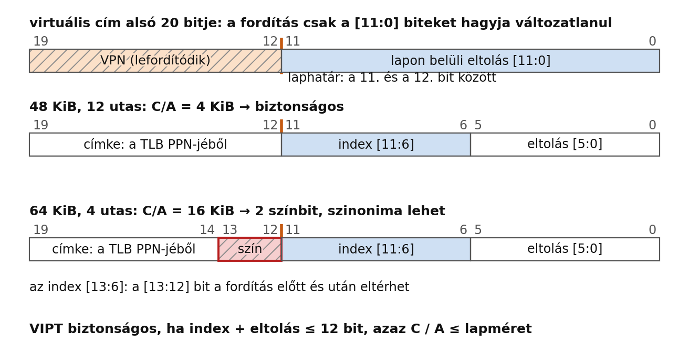

A mérőgépen (i5-13400F, 2026-11-25) a bench_chase
tlb módja egy mutatóláncot jár be, amelyben
laponként egyetlen cache-sor van. 96 lapig egy elérés
kb. 1,1 ns. 128 lapnál 2,64 ns, pedig a láncban csak 128 sor van, ami
bőven elfér a 48 KiB-os L1-ben. Ha ugyanazt a 128 sort tömören, egymás
mellé tesszük, az idő 1,13 ns marad. 65 536 lapnál a szétszórt változat
22,4 ns, a tömör 14,8 ns.
A különbség a címfordítás ára. Egy Sv39-fordítás három memóriaolvasás (Lapozás és többszintű laptáblák); ha minden betöltés előtt három további betöltés kellene, a gép használhatatlanul lassú volna. A megoldás egy külön gyorsítótár a fordításoknak.
Ha egy telefonkönyvben háromszor kell lapoznod egy szám megtalálásához, a gyakran hívott számokat felírod egy cédulára a telefon mellé. Ez a cédula a TLB (translation lookaside buffer, a címfordítások gyorsítótára): néhány tucat vagy néhány ezer, nemrég használt VPN → PPN pár. Ami rajta van, azonnal megvan; ami nincs, azért végig kell lapozni (laptábla-bejárás), és a friss eredmény felkerül a cédulára.
A cédula kicsi. Az, hogy egyszerre mekkora memóriaterületet „ér el”, a bejegyzések számától és a lapmérettől függ. Ez a lefedettség; ha a program ennél nagyobb területen ugrál, a TLB-hibák megszaporodnak.
Figyeld meg, hogy mindegyik görbe a saját lefedettségénél indul el, és a lapméret 512-szeres növelése a küszöböt 512-szer jobbra tolja.
Definíció. A TLB bejegyzése egy virtuális lapszámhoz tárolja a fizikai lapszámot és a jogosultságbiteket. A TLB halmazasszociatív vagy teljesen asszociatív cache, ugyanazzal a címbontási logikával, mint az adat-cache (Cache-szervezés: leképezés és címbontás), csak a „blokk” egy egész lap fordítása.
A modern magok kétszintű TLB-t használnak: kicsi, nagyon gyors első szintű TLB-k (külön utasításra és adatra) és egy nagyobb, közös második szint (STLB). A mérőgép teljesítménymagjára jellemző adatok: 96 bejegyzéses L1 adat-TLB betöltésekhez és 2048 bejegyzéses L2 TLB (ellenőrizendő: Intel dokumentáció, termékfüggő). A mérés ezekkel összhangban van, ahogy a Kód szakasz mutatja.
Címtér-azonosító. Minden folyamatnak saját táblája
van, ezért folyamatváltáskor a régi fordítások érvénytelenek. Ürítés
helyett a bejegyzés eltárolhat egy ASID-ot (address
space identifier, az x86-on PCID), amelyet a satp ad meg: más ASID
bejegyzése nem talál. A globális (G) bejegyzés –
tipikusan a rendszermag lapja – minden ASID-del érvényes. Ha az OS
módosít egy PTE-t, a TLB-t érvénytelenítenie kell (RISC-V:
sfence.vma, x86: invlpg), különben a régi
fordítás él tovább. Többmagos gépen ezt a többi magnak is jelezni kell
(TLB-lelövés, TLB shootdown); a protokollt itt nem tárgyaljuk.
Definíció. A TLB lefedettsége (TLB reach) az a memóriaterület, amelyet a bejegyzései egyszerre leírnak:
ahol a bejegyzések száma, a lapméret. Szavakban: ennyi, különböző lapokon fekvő adat érhető el TLB-hiba nélkül.
| TLB | lapméret | lefedettség |
|---|---|---|
| 96 bejegyzés | 4 KiB | 384 KiB |
| 2048 bejegyzés | 4 KiB | 8 MiB |
| 2048 bejegyzés | 2 MiB | 4 GiB |
A 384 KiB jóval kisebb az L2-nél (1,25 MiB): a program akkor is
fizethet TLB-büntetést, amikor az adat még a cache-ben van. A
nagy lapok (huge pages, 2 MiB és 1 GiB; a RISC-V
szuperlapjainak x86-os megfelelői, Lapozás és
többszintű laptáblák) ugyanannyi bejegyzéssel 512-szer, illetve 262
144-szer nagyobb területet fednek le. A nagy lapok bejegyzésszáma a kis
lapokétól eltérhet (ellenőrizendő). Áruk: egybefüggő, igazított fizikai
memória kell hozzájuk, és pazarlás, ha a program a lap nagy részét nem
használja. Linuxon a transzparens nagy lapok (THP)
automatikusan is adhatnak 2 MiB-os lapot; a mérőgépen a beállítás
madvise, tehát a programnak kérnie kell.
Egyenletes, független véletlen elérésnél, teljesen asszociatív LRU TLB-vel a hibaarány méretű munkahalmazon
mert a TLB-ben lévő lapok aránya éppen . Például 16 MiB-on a 96 bejegyzéses TLB az elérések 97,7%-ában hibázik, a 2048 bejegyzéses 50%-ában.
Ha az L1 TLB hibázik, az L2 TLB következik (néhány ciklus), és ha az is hibázik, a hardveres bejáró olvassa a PTE-ket. Ezek is memóriaolvasások a cache-hierarchián át: ha a levélbejegyzést tartalmazó sor a cache-ben van (egy 64 bájtos sor 8 szomszédos lap PTE-jét tartalmazza), a bejárás olcsó; ha a memóriából kell hozni, drága. A valódi magok a felsőbb szintek bejegyzéseit külön gyorsítótárban is tartják (paging-structure cache; ellenőrizendő). Az AMAT (AMAT, a hibák osztályozása és a többszintű cache) mintájára a címfordítás átlagos többletideje:
ahol az L1 TLB hibaaránya, az L2 TLB ideje, az L2 TLB-ben sem találó elérések aránya (az összes eléréshez viszonyítva), a bejárás ideje. A teljes átlagos elérési idő .
Az L1 cache-nek is meg kell mondani, melyik halmazban keressen. Három lehetőség:
A VIPT veszélye a szinonima (alias): ha ugyanaz a fizikai lap két virtuális címen is le van képezve (megosztott memória), és az index olyan bitet használ, amely a fordítás során megváltozhat, a két cím két külön halmazba kerülhet. Az egyik másolat írása a másikban nem látszik.
Definíció. A VIPT-feltétel: ha az index és az eltolás bitjei nem lépik túl a lapon belüli eltolás bitjeit, azaz
akkor az index csak lefordítatlan biteket használ, és szinonima nem keletkezhet. ( az egy útra jutó méret.)

A mérőgép 48 KiB-os L1 adat-cache-e 12 utas: KiB, pontosan egy lap, a feltétel teljesül. Nagyobb L1-hez több út (drágább és lassabb), nagyobb lapméret kell, vagy a hardvernek vagy az OS-nek kell a „színbiteket” kezelnie (lapszínezés, page coloring). A 16 KiB-os alaplapot használó rendszerek nagyobb VIPT L1-et engednek meg (ellenőrizendő: platformfüggő).
Továbbvitt eredmény. A TLB lefedettsége ; a munkahalmaz fölött a hibaarány egyenletes véletlen elérésnél , a nagy lapok a lefedettséget sokszorozzák. A VIPT L1 szinonimamentes, ha . Ezt a Védelem és virtualizáció hardveres támogatása és A top-down elemzési módszer használja.
Továbbvitt eredmény. A TLB megosztott, időzítésen át megfigyelhető állapot, ezért mellékcsatorna is; a rendszermag lapjainak leválasztása a felhasználói tábláról (KPTI) a TLB-hibák árán véd a Meltdown ellen. Erről a Spectre és Meltdown szól.
Egy program 16 MiB-os tömbben olvas egyenletes véletlen címeket, 4 KiB-os lapokkal. Legyen , , ciklus, egy bejárás átlagosan 25 ciklus (a PTE-k többnyire az L2-ben vannak; feltevés).
A VIPT-példa: egy 64 KiB-os, 4 utas, 64 bájtos soros cache-ben halmaz, , ; , tehát színbit van, és egy fizikai sor különböző halmazban jelenhetne meg.
A modellben az archkit.vm.MMU a TLB-t a
cache-hierarchiával köti össze: a bejárás PTE-olvasásai is a cache-en
mennek át. A mérést utánzó láncot futtatjuk: laponként egy sor
(spread), ugyanannyi sor tömören (dense), és
spread 2 MiB-os lapokkal (huge). A
cache-késleltetéseket (5, 15, 60, memória 320 ciklus) és a 7 ciklusos L2
TLB-t a mérés alapján választottuk, a TLB-méretek feltevések; a modell
Sv39 háromszintű tábláit járja be, az x86 négyszintűt használ.
import sys; sys.path.insert(0, "code")
import random
from archkit import vm, cache, perf
def chase_cycles(pages, variant, frames="egybefüggő", passes=2):
mem = vm.PhysMem(first_frame=0x100000)
sp = vm.AddressSpace(mem)
vbase, pbase = 0x40000000, 0x200000000
if variant == "huge":
for k in range((pages * 4096 + (2 << 20) - 1) // (2 << 20)):
sp.map(vbase + k * (2 << 20), pbase + k * (2 << 20), "RUA", level=1)
else:
n = pages if variant == "spread" else (pages * 64 + 4095) // 4096
order = (list(range(n)) if frames == "egybefüggő"
else random.Random(99).sample(range(1 << 20), n))
for k in range(n):
sp.map(vbase + k * 4096, pbase + order[k] * 4096, "RUA")
addrs = [vbase + i * 64 if variant == "dense"
else vbase + i * 4096 + (i + i // 64) % 64 * 64 for i in range(pages)]
random.Random(1).shuffle(addrs)
levels = [cache.Cache(48 << 10, 64, 12, addr_bits=56),
cache.Cache(1280 << 10, 64, 10, addr_bits=56),
cache.Cache(20 << 20, 64, 10, addr_bits=56)]
h = cache.Hierarchy(levels, hit_times=[5, 10, 45], mem_time=260)
mmu = vm.MMU(mem, sp.satp, vm.TLB(96, 6), vm.TLB(2048, 16), h, l2_latency=7)
for p in range(passes):
if p == passes - 1:
mmu.cycles = mmu.accesses = 0
for a in addrs:
mmu.access(a)
return mmu.cycles / mmu.accesses
meta, rows = perf.read_bench_csv("figures/data/ca053-tlb.csv")
ghz = float(meta["ghz_est"])
meas = {(r["variant"], r["pages"]): r["median_ns_per_access"] * ghz for r in rows}
print("ciklus/elérés: mért (modell)")
print(" lapok | spread | dense | spread, huge")
for n in (64, 128, 1024, 2048, 4096, 16384):
row = [f"{meas[v, n]:5.1f} ({chase_cycles(n, m):4.1f})"
for v, m in (("spread", "spread"), ("dense", "dense"), ("spread_huge", "huge"))]
print(f"{n:6d} | " + " | ".join(row))ciklus/elérés: mért (modell)
lapok | spread | dense | spread, huge
64 | 5.2 ( 5.0) | 5.7 ( 5.0) | 5.2 ( 5.0)
128 | 12.0 (12.0) | 5.2 ( 5.0) | 5.1 ( 5.0)
1024 | 22.0 (22.0) | 15.3 (15.0) | 15.0 (15.0)
2048 | 27.5 (22.0) | 15.0 (15.0) | 15.0 (15.0)
4096 | 38.0 (41.3) | 15.4 (15.0) | 15.0 (15.0)
16384 | 57.1 (45.4) | 28.4 (19.4) | 15.1 (15.0)A modell a lépcsők helyét és magasságát jól követi: 128 lapnál megjelenik a kb. 7 ciklusos L2 TLB-büntetés, 2048 lap fölött a bejárás, a nagy lapos változat pedig a tömör mintával együtt mozog. Két ponton tér el jobban: 2048 lapnál a mérés már a határon részleges hibákat mutat, és 16 384 lapnál a tömör minta (1 MiB adat) sokkal lassabb a modellnél, noha elférne az L2-ben. A modell eddig egybefüggő fizikai kereteket osztott ki; egy valódi OS szétszórja őket, és ez az L2 halmazaiban ütközéseket okoz. Nézzük meg véletlen keretekkel:
for n in (4096, 16384):
for v in ("spread", "dense"):
c = chase_cycles(n, v, frames="véletlen")
print(f"{n:6d} {v:6s}: mért {meas[v, n]:5.1f}, modell véletlen keretekkel {c:5.1f}") 4096 spread: mért 38.0, modell véletlen keretekkel 41.3
4096 dense : mért 15.4, modell véletlen keretekkel 15.0
16384 spread: mért 57.1, modell véletlen keretekkel 63.5
16384 dense : mért 28.4, modell véletlen keretekkel 28.4A tömör minta véletlen keretekkel a mért értéket adja (itt a tizedesjegyig egyezik): a hiányzó hatás az L2 ütközése volt. A szétszórt mintánál a modell most kicsit felülbecsül; a valódi bejáró gyorsítótárai (és a modell egyszerűsítései) ezt magyarázhatják, de ezt nem vizsgáltuk.
Nagy lapot Linuxon a mérőprogram így kér (részlet a
bench_chase.cpp-ből):
Buffer(size_t bytes, bool huge) : bytes_((bytes + HUGE_PAGE - 1) / HUGE_PAGE * HUGE_PAGE) {
data_ = std::aligned_alloc(HUGE_PAGE, bytes_);
// ... hibakezelés ...
madvise(data_, bytes_, huge ? MADV_HUGEPAGE : MADV_NOHUGEPAGE);
std::memset(data_, 0, bytes_);
}A kérés nem garancia: a program a
/proc/self/smaps_rollup AnonHugePages sorából
ellenőrzi, tényleg kapott-e nagy lapot, és a CSV huge_kib
oszlopa rögzíti.
Nyisd meg a TLB-lefedettség lapot.
code/bench/build/bench_chase --mode tlb --cpu 2 --pages 16,64,128,512,2048,8192
– hol vannak a te lépcsőid?AnonHugePages
értéket.sfence.vma (x86:
invlpg), több magon mindegyiken.vm.tlb_misses
függvénnyel szimuláld egy ciklikus bejárás hibaarányát 64, 96, 97 és 200
lapra egy 96 bejegyzéses teljesen asszociatív TLB-ben (bemelegítés
után), és magyarázd meg a 96→97 ugrást.A TLB a címfordítások gyorsítótára; találatnál a fordítás ingyenesnek tekinthető, hibánál az L2 TLB, majd a hardveres laptábla-bejárás következik, amelynek PTE-olvasásai a cache-hierarchián mennek át. A lefedettség a bejegyzésszám és a lapméret szorzata: 96 × 4 KiB = 384 KiB, 2048 × 4 KiB = 8 MiB. A mérőgépen a laponként egy sort érintő lánc 128 lapnál kb. 1,1-ről 2,64 ns-ra lassul, miközben a tömör változat nem. A nagy lapok a lefedettséget megsokszorozzák. Az ASID megkíméli a TLB-t a folyamatváltáskori ürítéstől. A VIPT L1 a fordítással párhuzamosan indexel, és szinonimamentes, ha legfeljebb a lapméret. A TLB mellékcsatorna is lehet; a KPTI TLB-árát a biztonsági fejezet tárgyalja.
1. 256 KiB, 128 MiB, 64 GiB.
2. 32 KiB / 8 = 4 KiB: biztonságos. 128 KiB / 8 = 16 KiB: 2 színbit (), nem biztonságos.
3. , ; . ciklus.
4. 128 KiB = 32 lap, ez jóval kisebb a 384 KiB-os lefedettségnél: bemelegítés után egyetlen hiba sincs körönként. (Az első körben 32 hiba.) A sorfolytonos bejárás egy lapon belül 512 elemet olvas hiba nélkül.
5.
for n in (64, 96, 97, 200):
trace = [k * 4096 for k in range(n)] * 20
m = vm.tlb_misses(trace, 96, warmup=n)
print(f"{n:4d} lap: hibaarány {m / (len(trace) - n):.3f}") 64 lap: hibaarány 0.000
96 lap: hibaarány 0.000
97 lap: hibaarány 1.000
200 lap: hibaarány 1.000Ciklikus bejárásnál LRU-val a 97. lap mindig éppen azt a bejegyzést szorítja ki, amelyre legközelebb szükség lesz, ezért minden elérés hibázik. Ugyanaz a jelenség, mint a cache ciklikus mintájánál; a mért lépcső (96 és 128 lap között) ezért éles. A valódi, nem teljesen asszociatív TLB-nél a halmazok miatt a lépcső elmosódhat.
6. Változtasd a lapok számát (pl. 512–8192),
laponként egy sort érintve véletlen lánccal; tartsd a sorok számát a
cache-méret alatt, vagy vond le a tömör változat idejét. Rögzítsd a
magot, ismételj sokszor, mediánt használj. Zavarhat: nagy lapok (kérj
MADV_NOHUGEPAGE-et), a cache-szintek határai, a prefetcher
(véletlen sorrend kell), a bejáró PTE-inek cache-hatása, és más
folyamatok (ASID-ek, ütemező).